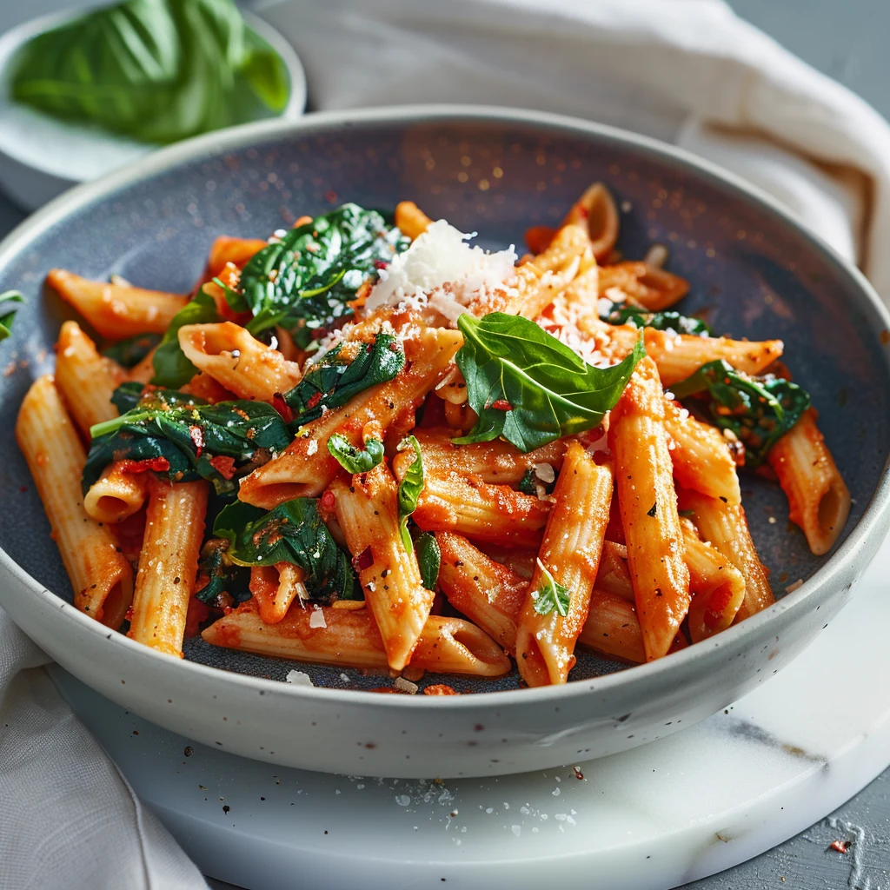

Prep: 10 min | Cook: 20 min
Penne
Arrabbiata
Arrabbiata
This, Mario Batali wrote in 2013 in The Times, is one of his late-night favorites. Its uncomplicated nature lends itself to an after-midnight feast. It’s basically pasta with tomato sauce and cheese, but red pepper flakes give the sauce a delicious kick.
Spinning for a new recipe!